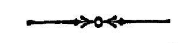

सप्तत्रिंशमाह्निकम् ।
अथ
श्रीतन्त्रालोके
श्रीमन्महामाहेश्वराचार्याभिनवगुप्त विरचिते
श्रीजयरथकृतविवेकाव्यटीकोपेते

सप्तत्रिंशमाह्निकम् ।

यन्मयतयेदमखिलं परमोपादेयभावमभ्येति ।
भवभेदास्त्रं शास्त्रं जयति श्रीमालिनी देवी ॥
तदेवमुपक्रान्तस्यैव शास्त्रस्य उपादेयभावं
निर्णेतुं प्रागुपजीवनेन पीठिकाबन्धमारचयति
उक्तनीत्यैव सर्वत्र
व्यवहारे प्रवर्तिते ।
प्रसिद्धावुपजीव्याया
मवश्यग्राह्य आगमः ॥ १ ॥
इह सार्वत्रिके व्यवहारे प्रवर्तिते पञ्चत्रिंशाहि-
कोक्कनीत्या प्रसिद्धावुपजीव्यायामागम एव
अवश्यग्राह्यो न अन्यथा किंचित् सिद्ध्येत् ॥१॥
ननु लौकिकप्रमाणगोचरे वस्तुनि अस्तु